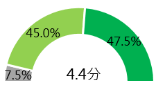

IP服務
服務使用情形與滿意度
IP會員總計回收40份利害關係人，依照會員申請IP用途，並加以區分為「申請IP後自用」的「IP註冊人(Non-IP Registrar)」與「申請IP後發放給其他公司／單位使用」的「IP受理註冊機構(IP Registrar)」，而兩者佔比為7比3，本調查中「IP註冊人」佔多數。
在使用相關服務的滿意度評比中，各項服務使用皆是正向的評價為主，「閱讀中心年報、電子報等內容」和「追蹤中心社群網站」、「台灣IPv6全球排序網站」滿意度皆高達100%；服務滿意度佳的原因中包含網站簡潔易用性高、服務感受佳等。
30%的IP會員有參與【IP發放政策制定】，等同12位受訪者，包含7位來自IP註冊人、5位代表IP受理註冊機構，兩者對此制定的滿意度都是100%。
B1.請問過去一年內，貴公司／組織曾經參與或使用過哪些TWNIC提供的服務？（可複選）
B2.根據以上曾經參與或使用過的服務中，您對服務體驗的滿意度如何？（單選）
圖 1 服務使用情形與滿意度
整體滿意度評估與價值感受
從IP會員對於中心的整體滿意度評估來看，無論是「服務品質」和「技術支援」的正向評價皆超過九成，平均分數為4.3分。
進一步分析「IP註冊人」和「IP受理註冊機構」對於整體滿意度的感受中，「IP受理註冊機構」有半數認為「服務品質」和「技術支援」表現滿分，而「IP註冊人」則是半數認為「好」；主要服務業務「IP發放服務」的滿意度略高，平均分數達4.4分，其中「IP註冊人」的滿意度評分較「IP受理註冊機構」高。信賴度與價值感受中，選擇「很好」的受訪者皆超過半數，而「IP受理註冊機構」對信賴度與價值感受又更佳。
服務品質

技術支援

IP發放服務
TWNIC提供的服務
對我的業務是有價值的

我對TWNIC是信賴的


A1.整體來說，您對TWNIC以下項目的滿意程度是？(單選)
A2.請問貴公司／單位使用TWNIC【IP發放服務】的整體滿意度？(單選)
A3.從您過去與TWNIC互動的經驗中，請選擇符合敘述的項目。(單選)
n=40
圖 2 滿意度評估與價值感受
服務價值感受評估
根據IP會員對於各註冊業務的價值感受評估中，主要服務項目「IP會員註冊／IP會員申請網站」和「IP位址/ASN核發、Second Opinion審核」的價值感受皆最高，達87.5%。價值感偏向正面的原因包含服務良好、銷售有彈性、發展多元等。
B7.作為IP代理發放單位，以下服務，您覺得是對貴組織在推動受理註冊業務上是有價值的。請以以下量表標示您對服務之價值。
n=40
圖 3 服務價值感受評估
支援與服務
共計有77.5%的IP會員有IPv4稀缺性的相關困擾，而有不同IP用途與角色的兩利害關係人中，只有71.4%「IP註冊人」認為有困擾，卻有高達91.7%「IP受理註冊機構」認為困擾。而會員認為TWNIC能提供的協助如下：
TWNIC能提供的協助如下：
E3.關於IPv4位址不足的問題，您覺得TWNIC能提供哪些協助？（可複選）
n=40
圖 4 支援與協助
45%的IP會員表示已開始佈建或轉換成IPv6的計畫，整體來說僅有15%已完成佈建轉換，三成並未完成，也有三成有計畫但沒有開始。相對來說「IP受理註冊機構」計畫完成度較高。IPv6佈建困難點中，沒有動機為最多人面臨的困難，技術知識則是其次。
TWNIC能提供的協助如下：
E6.關於IPv6位址佈建與推廣的問題，您覺得TWNIC能提供哪些協助？（可複選）
n=40
圖 5 支援與協助
活動參與、期待偏好
IP受理註冊機構對於APNIC合辦教育訓練的參與率超過半數，參與次數則集中在2次內，而滿意度為100%。相較於IP註冊人相對參與率較低，滿意度也略低。
IP會員在論壇會議與教育訓練的參與度分別為45%和52.5%，其中「IP受理註冊機構」略高「IP註冊人」近一成。對於活動的未來期待中，「提供線上影片回看」(72.5%)居冠、其次為「可下載論壇或課程內容簡報」(55%)，兩者都有超過半數的期待，相較於提供更多功能或附加價值外，同樣是對於內容能保存會更重要。
希望增加的議題或資訊如：
「技術應用－IPv6等資訊提供、CLOUD & SDN 網路應用」
「實際案例分享－技術應用實際案例分享」
「資安訊息－國內對於對抗 DDoS 攻擊的現況、困境與解法；利用自有雲使用配發的IP，建立網路安全機制」
資訊服務
中心發布的網路議題關注頻率中，95%皆為偶爾或更常關注。關注的原因為「了解網路新知」(65.3%)最多、對未來期待的議題則主要是對於內容的多樣性與涵蓋度有期許。
H1.請問您關注TWNIC發布的相關網路議題的情形是（單選）
n=40
圖 6 關注頻率
H2.請問您關注 TWNIC發布的相關網路議題的原因？（可複選）
n=40
圖 7 關注內容
H3.請問您未來對TWNIC持續提供網路議題資訊的期待是？（可複選）
n=40
圖 8 期待議題
期望與建議
雖然在期待與建議上IP會員並未有太多需求，但從業務挑戰來看，七成IP會員認為目前網路業務面臨的挑戰為「網路資訊安全」，可知資安會是一個可以提供的服務；此外對於IPv4稀缺性與IPv6佈建的問題上，都有超過九成或近九成認為需要TWNIC協助，協助方式為「協助釋出閒置的IPv4位址」(61.3%)、「分享有關資源轉移的方式」(58.1%)，以及「提供IPv6的教育訓練或人才培訓」(56.4%)、「分享IPv6的佈建成功案例供參考」(53.8%)，與案例分享、教育訓練等有關，也是TWNIC可以著手建立的一環。